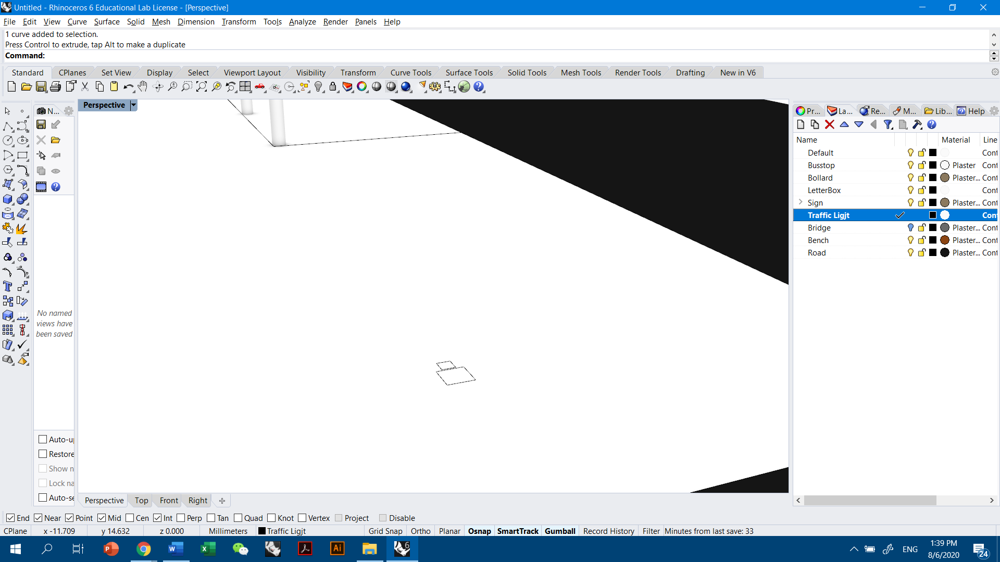
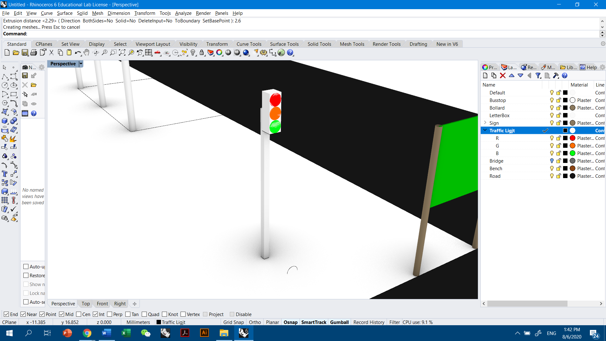
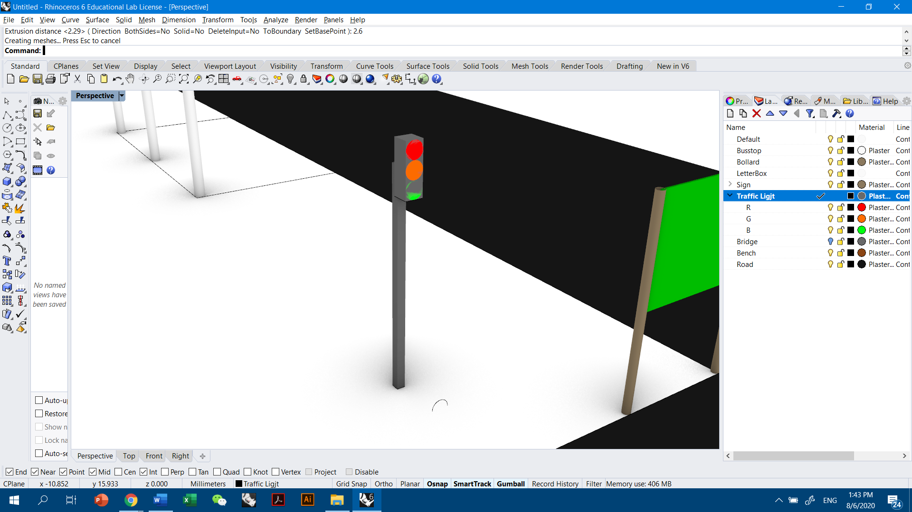

Getting the dimensions of street lightings.
| Specific Type | General Specifications(m): |
| Traffic Light Vertical |
Housing for 3 Lights (Red, Amber, Green):
|
| Overhead Traffic Light |
Housing for 3 Lights (Red, Amber, Green):
|
Open modelling software. Ensure that the correct dimension (mm or m) settings are selected.
Select a street in modelling software to place street furniture in.
If there is no street that you would like to reference to, create a new street. The
new street can be created by
creating a ground plane in one layer and work in 2D space (line with dimension of
2.2m for one lane) to 3D space (plane).
Layer street with points and decide whether points are parallel or perpendicular to
the street.
For the spacing between points, it can be even or
uneven (to be decided by the user).
Create 2D outline for street furniture. Traffic lights have different components (lights, housing and pole).
Work into 3D space by extruding the 2D shapes.
Add realism to the 3D object by adding texture and color (under the material section in Rhino CAD software, where changes reflected in Rendered view).

Then, orientate the furniture in the correct direction.
Lastly, group the furniture in an assigned layer and place the street lights according
to
points in step 2 if multiple street lights are required.
Group all objects.
Move desired objects to (0,0,0) point in CAD software.
Ensure saved views (named views for Rhinoceros) are deleted. Export objects into compatible file format for the digital environment (.fbx for Unity).